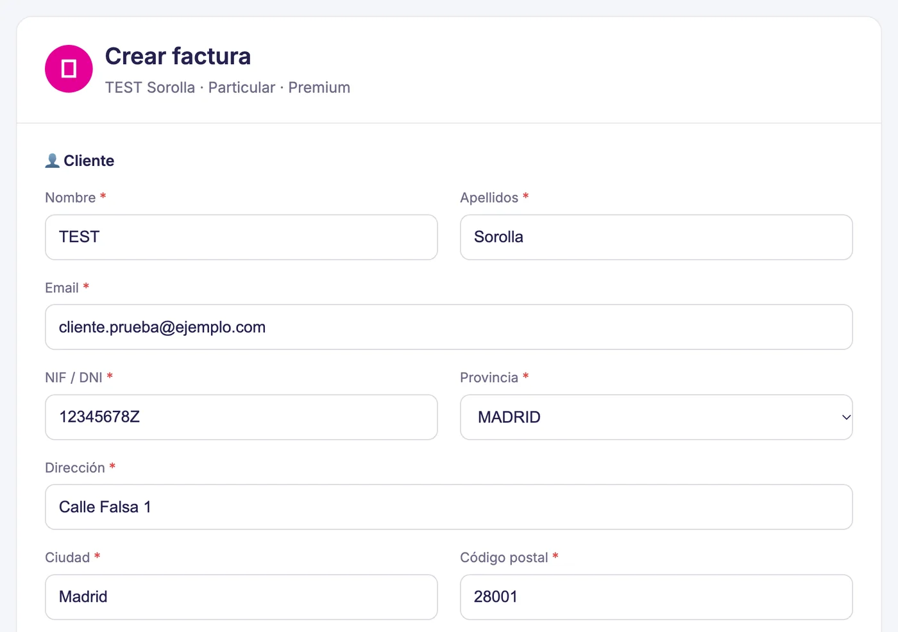
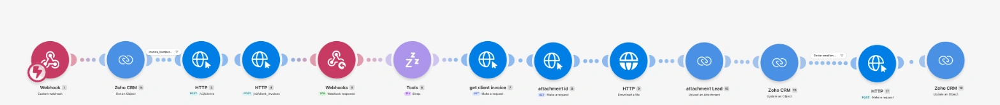

Project 10 · Invoice generationAll projects
Issuing an invoice went from eight steps to one button.
The person on the team clicks a button in the client record. The details are checked and the invoice is created automatically in Qonto, the bank the company invoices through, without logging in to it. It is then emailed to the client and saved in their record, and the team gets an alert when it is issued and when it is paid.
What the person on the team does
Before: eight steps across two programs
The invoice
Invoice
ClientMarta Ruiz
DescriptionMaintenance service
Total300 €
IssuedPaidTeam alert: invoice issued.
Team alert: invoice paid.
The real tool




What changes
Before, you had to copy the client's details from the CRM to Qonto, create the invoice there, download it and send it. Eight steps across two programs. Now it is one button in the client record.
- It checks the details before issuing.
- It creates the invoice in Qonto and saves it in the client record.
- It sends an alert when the invoice is issued and when it is paid.
- It has one manual for the people who use it and another for whoever maintains it.
What I did
- I counted the steps involved and brought them into a single screen.
- I connected the CRM with Qonto so the invoice is created there without typing anything.
- I decided which details are checked before issuing.
- I added the invoice issued and invoice paid alerts.
- I wrote the manuals.
ResultsInvoicing no longer depends on another department. The team issues and sends the invoice on the spot, and payment comes in faster.
Built withZoho CRM · Qonto · Make